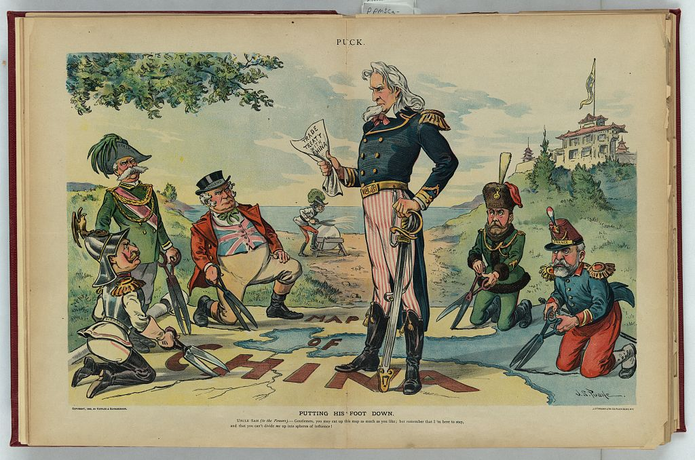
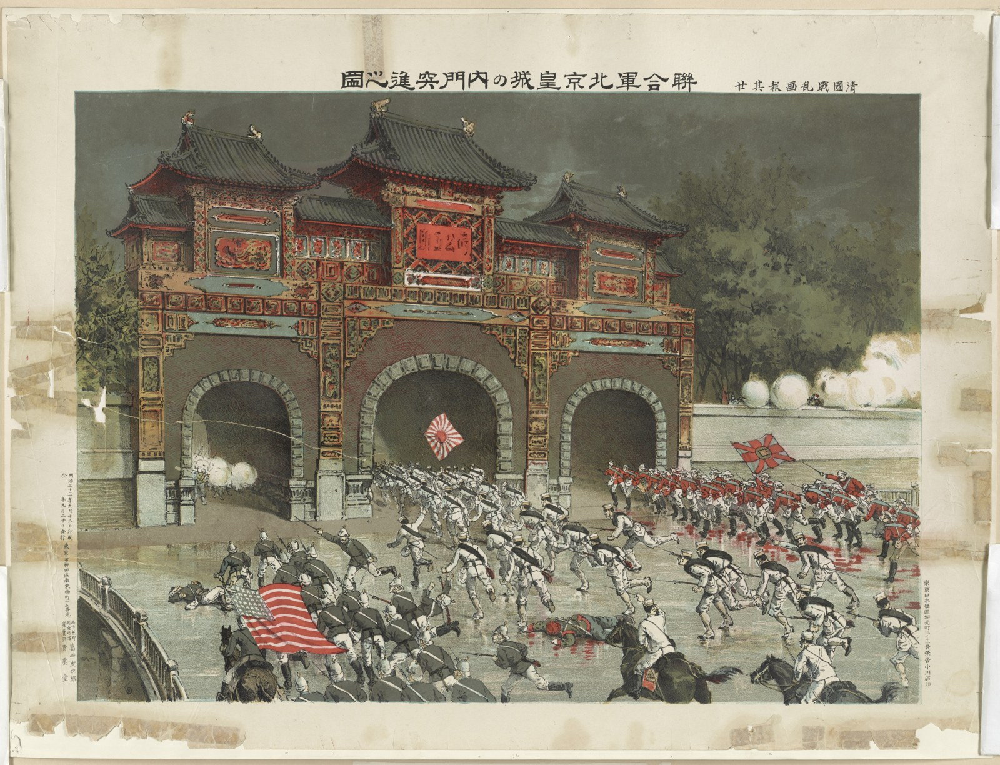
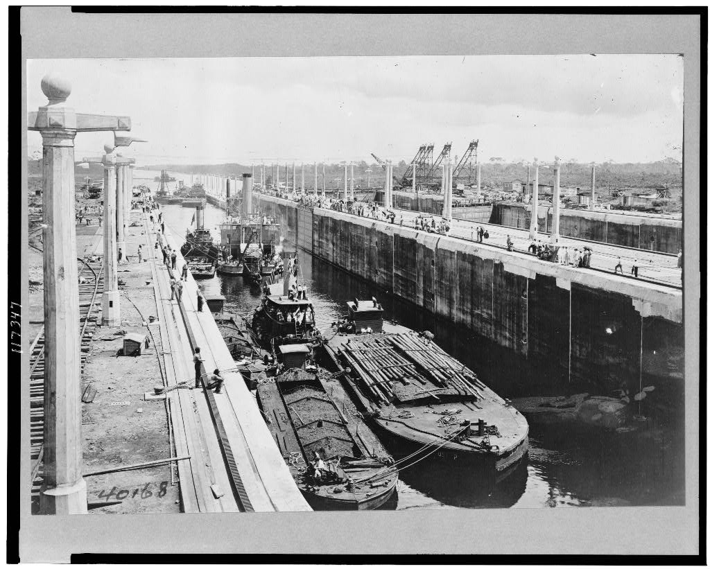
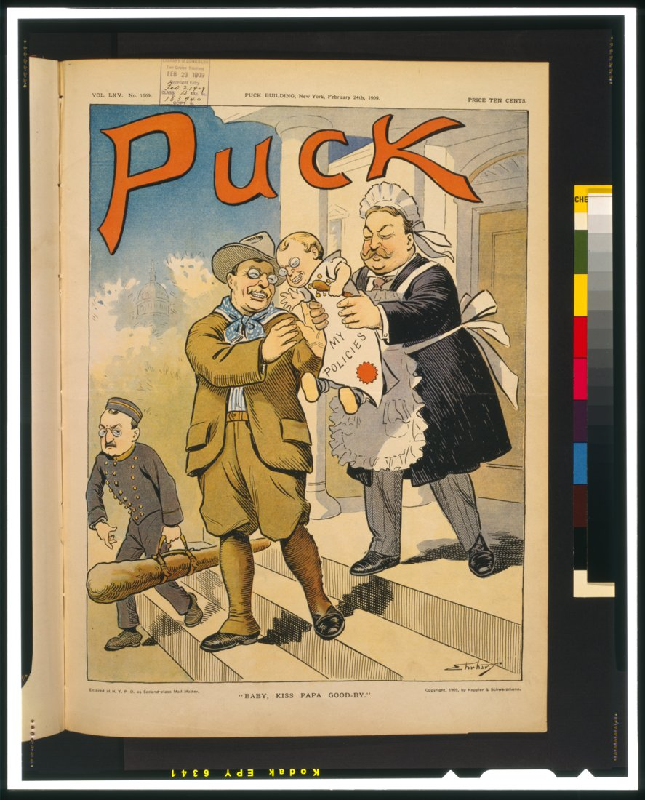

Directions: Work through the five stations. At each station, name the instrument of power on display: a diplomatic note, armed force, control of a route, a claim to police power, or loans backed by force. In Part 2 you will classify all five and judge which instrument changed the most on the ground.
Source: Secretary of State John Hay to Ambassador Andrew D. White, September 6, 1899, in Papers Relating to the Foreign Relations of the United States, 1899, pp. 129 to 130. One clause has been omitted from the passage below and the omission is marked with an ellipsis. The numbered promises are complete.

"Earnestly desirous to remove any cause of irritation and to insure at the same time to the commerce of all nations in China the undoubted benefits which should accrue from a formal recognition by the various powers claiming "spheres of interest" that they shall enjoy perfect equality of treatment for their commerce and navigation within such "spheres," the Government of the United States would be pleased to see His German Majesty's Government give formal assurances ... that each, within its respective sphere of whatever influence:
First. Will in no way interfere with any treaty port or any vested interest within any so-called "sphere of interest" or leased territory it may have in China.
Second. That the Chinese treaty tariff of the time being shall apply to all merchandise landed or shipped to all such ports as are within said "sphere of interest" (unless they be "free ports"), no matter to what nationality it may belong, and that duties so leviable shall be collected by the Chinese Government.
Third. That it will levy no higher harbor dues on vessels of another nationality frequenting any port in such "sphere" than shall be levied on vessels of its own nationality, and no higher railroad charges over lines built, controlled, or operated within its "sphere" on merchandise belonging to citizens or subjects of other nationalities transported through such "sphere" than shall be levied on similar merchandise belonging to its own nationals transported over equal distances."
1. In your own words, what three promises did Hay ask each power to make? Who was to collect the duties under the second promise, and why is that detail important?
2. The United States held no sphere of its own in China. How does the Pughe cartoon show the American position Hay was writing from, and what in the cartoon agrees with the note and what goes beyond it?
Source: Summary of the siege of the Beijing legations and the relief expedition, drawn from the standard record of the China Relief Expedition, with the print below and a passage from Hay's circular note of July 3, 1900, in Papers Relating to the Foreign Relations of the United States, 1900. The summary is paraphrase, not quotation.

In the spring of 1900 the Boxers, a Chinese society opposed to foreign influence, attacked missionaries, Chinese Christians, railroads, and telegraph lines. In June, Boxers and Qing government troops besieged the foreign diplomats and their guards inside the legation quarter of Beijing. The siege lasted about eight weeks. Eight nations, Britain, France, Germany, Italy, Japan, Russia, Austria-Hungary, and the United States, combined their forces. An international expedition of about 20,000 men fought from the coast to Beijing and lifted the siege on August 14, 1900. Foreign deaths numbered in the hundreds. Chinese Christians died in the tens of thousands during the uprising, and Boxers and Chinese soldiers died in large numbers in the fighting and the occupation that followed. During the siege, on July 3, Hay circulated a second note stating the American aim: "to seek a solution which may bring about permanent safety and peace to China, preserve Chinese territorial and administrative entity, protect all rights guaranteed to friendly powers by treaty and international law, and safeguard for the world the principle of equal and impartial trade with all parts of the Chinese Empire." In 1901 the Boxer Protocol charged China an indemnity of about 333 million dollars, payable over 39 years.
1. What did Hay's July 3 note say the United States wanted for China itself, beyond the safety of foreigners? Quote the words that carry that aim.
2. The note in Station 1 was paper. What instrument stands behind the Open Door in this station, and what did that instrument cost China after the fighting ended?
Source: The diagram below was drawn for this activity. It is not a historical source. The photograph and the treaty terms summarized under it are from the record of the canal's construction.

Colombia's senate rejected the canal treaty in 1903. Panama declared independence on November 3, 1903, and United States warships kept Colombian troops from reaching the isthmus. The treaty Panama signed that month gave the United States the Canal Zone shown in the diagram, 10 million dollars, and an annual payment of 250,000 dollars. The United States built the canal between 1904 and 1914. About 5,600 workers died during the American building years, by the official count, most of them West Indian laborers. The SS Ancon made the first official transit on August 15, 1914.
1. Using the diagram, describe the route a ship follows from the Atlantic to the Pacific. Name the locks, the lake, and the cut in order.
2. What could this diagram never show about how the United States gained the zone it marks? Name two facts from the station text that the diagram leaves out.
Source: Theodore Roosevelt, Fourth Annual Message, December 6, 1904, in the text of the American Presidency Project. The passage below is one continuous passage, quoted without cuts.
"It is not true that the United States feels any land hunger or entertains any projects as regards the other nations of the Western Hemisphere save such as are for their welfare. All that this country desires is to see the neighboring countries stable, orderly, and prosperous. Any country whose people conduct themselves well can count upon our hearty friendship. If a nation shows that it knows how to act with reasonable efficiency and decency in social and political matters, if it keeps order and pays its obligations, it need fear no interference from the United States. Chronic wrongdoing, or an impotence which results in a general loosening of the ties of civilized society, may in America, as elsewhere, ultimately require intervention by some civilized nation, and in the Western Hemisphere the adherence of the United States to the Monroe Doctrine may force the United States, however reluctantly, in flagrant cases of such wrongdoing or impotence, to the exercise of an international police power."
Roosevelt sent this message after Britain, Germany, and Italy blockaded Venezuela in 1902 and 1903 to collect debts. In 1905 the United States applied the policy in the Dominican Republic: American officials took over the customhouses, collected the import taxes, and paid foreign creditors a fixed share of the revenue.
1. According to the passage, what two things must a country do to be sure the United States will not interfere with it? Quote the words.
2. The Monroe Doctrine of 1823 told European powers not to intervene in the Americas. What does this passage add to it, and how did the Dominican customs takeover of 1905 carry out the addition?
Source: The cartoon below is Samuel D. Ehrhart's cover for Puck, February 24, 1909, Library of Congress. It shows the transfer of power from Roosevelt to Taft, not dollar diplomacy itself. The policy account under it is summarized from the record, and the quotation is from President Taft's Fourth Annual Message, December 3, 1912, in the text of the American Presidency Project.

Taft described his policy in 1912: "The diplomacy of the present administration has sought to respond to modern ideas of commercial intercourse. This policy has been characterized as substituting dollars for bullets." In practice, Secretary of State Philander Knox and Taft encouraged American bankers to lend to governments the United States wanted to steady, above all in the Caribbean. In Nicaragua the United States backed the overthrow of President Jose Santos Zelaya in 1909. American bankers then lent money to the new government, and an American collector took charge of Nicaraguan customs, the revenue that secured the loans. When Nicaraguans revolted against that government in 1912, about 2,500 United States Marines and sailors landed to protect it, and a Marine guard remained in Nicaragua for years afterward.
1. What did Taft claim dollars would substitute for, and what two financial arrangements carried the policy in Nicaragua?
2. The cartoon shows Taft receiving Roosevelt's policies and Roosevelt's stick leaving with an aide. What happened in Nicaragua in 1912 that shows the stick had not really left?
For each station, write the instrument of power and one fact from the station that proves the classification.
Station 1: Instrument ______________________ Fact: ______________________________________________
Station 2: Instrument ______________________ Fact: ______________________________________________
Station 3: Instrument ______________________ Fact: ______________________________________________
Station 4: Instrument ______________________ Fact: ______________________________________________
Station 5: Instrument ______________________ Fact: ______________________________________________
Now the judgment. Which instrument changed the most on the ground for the people who lived where it was used? Write one paragraph. Your paragraph must name the instrument and its station, give two facts from that station, and state the cost to the people on the receiving end. A strong paragraph also answers the best case for one other instrument.
1. In your own words, what three promises did Hay ask each power to make? Who was to collect the duties under the second promise, and why is that detail important? First, no interference with any treaty port or vested interest inside any sphere or leased territory in China. Second, the Chinese treaty tariff applies to all merchandise in the sphere's ports, whatever its nationality, and the duties are collected by the Chinese Government. Third, no higher harbor dues on foreign vessels than on its own, and no higher railroad charges on foreign merchandise than on its own nationals' goods over equal distances. The collector is important because it kept the revenue and the customs service Chinese: the note claimed access for everyone's trade while leaving China's government formally in charge of its own ports, which is the difference between the Open Door and a partition of China into colonies.
2. The United States held no sphere of its own in China. How does the Pughe cartoon show the American position Hay was writing from, and what in the cartoon agrees with the note and what goes beyond it? Uncle Sam stands on the map of China holding a trade treaty while the European rulers cut pieces off the map with shears: the United States is present and trading but holds no piece of its own, which is why it needed the door kept open in everyone else's pieces. The shears and the cutting agree with the note's premise, a China being divided into spheres. The cartoon goes beyond the note in the figure's size, stance, and sword: it promises an American presence backed by force, while the note itself is a request for promises, sent by a country with no sphere and no army in China in 1899.
1. What did Hay's July 3 note say the United States wanted for China itself, beyond the safety of foreigners? Quote the words that carry that aim. It aimed "to seek a solution which may bring about permanent safety and peace to China, preserve Chinese territorial and administrative entity," alongside protecting treaty rights and "equal and impartial trade with all parts of the Chinese Empire." The aim for China itself is a China kept whole as one state, not partitioned among the powers.
2. The note in Station 1 was paper. What instrument stands behind the Open Door in this station, and what did that instrument cost China after the fighting ended? Armed force: the eight-nation expedition of about 20,000 men, including United States troops, that fought to Beijing and lifted the siege. After the fighting, the Boxer Protocol of 1901 charged China an indemnity of about 333 million dollars over 39 years. Chinese Christians had died in the tens of thousands during the uprising, and Boxers and Chinese soldiers died in large numbers. The Open Door's preserved China was also a China billed for its own invasion.
1. Using the diagram, describe the route a ship follows from the Atlantic to the Pacific. Name the locks, the lake, and the cut in order. A ship enters at Colon on the Atlantic side, rises through the Gatun Locks, crosses Gatun Lake, passes through the Culebra Cut across the continental divide, descends through the Pedro Miguel Locks (students may add the Miraflores Locks from their own knowledge, but the diagram labels Pedro Miguel), and reaches Panama City on the Pacific, a route of about 50 miles inside a zone ten miles wide.
2. What could this diagram never show about how the United States gained the zone it marks? Name two facts from the station text that the diagram leaves out. Any two. Colombia's senate rejected the canal treaty in 1903. United States warships kept Colombian troops from reaching the isthmus while Panama declared independence. Panama's treaty granted the zone for 10 million dollars and 250,000 dollars a year. About 5,600 workers, most of them West Indian laborers, died during the American building years. The diagram shows a finished route and a granted zone. It cannot show the rejected treaty, the warships, or the dead, which is why the caption labels it a teaching diagram rather than a source.
1. According to the passage, what two things must a country do to be sure the United States will not interfere with it? Quote the words. It must act "with reasonable efficiency and decency in social and political matters," and, in Roosevelt's own summary, "it keeps order and pays its obligations." A nation meeting both tests "need fear no interference from the United States."
2. The Monroe Doctrine of 1823 told European powers not to intervene in the Americas. What does this passage add to it, and how did the Dominican customs takeover of 1905 carry out the addition? The addition is a claimed American right to intervene first: in flagrant cases of "chronic wrongdoing" or "impotence," the adherence of the United States to the Monroe Doctrine may force it "to the exercise of an international police power." A doctrine written to keep Europeans out became a warrant for the United States to go in. In the Dominican Republic in 1905, American officials took over the customhouses, collected the import taxes, and paid foreign creditors a fixed share, collecting the debt themselves so that no European power had the reason for intervention that Venezuela had given in 1902 and 1903.
1. What did Taft claim dollars would substitute for, and what two financial arrangements carried the policy in Nicaragua? Bullets: "This policy has been characterized as substituting dollars for bullets." In Nicaragua the arrangements were American bank loans to the government the United States supported after 1909, and an American collector in charge of Nicaraguan customs, the revenue that secured the loans.
2. The cartoon shows Taft receiving Roosevelt's policies and Roosevelt's stick leaving with an aide. What happened in Nicaragua in 1912 that shows the stick had not really left? When Nicaraguans revolted against the government the loans supported, about 2,500 United States Marines and sailors landed to protect it, and a Marine guard remained for years. The financial policy rested on military force held in reserve, and in 1912 the reserve was used. Note for teachers: the cartoon is dated February 24, 1909, before dollar diplomacy had a name, and its source line says so. It documents the handoff of Roosevelt's policies to Taft. It is not evidence about the loan policy itself, which the station text carries.
The classification lines: Station 1, a diplomatic note. Station 2, armed force. Station 3, control of a route (a canal and a zone). Station 4, a claim to police power. Station 5, loans backed by force. Accept "money" or "finance" for Station 5 if the fact line names the loans or the customs collector.
Full credit should be awarded if the student: